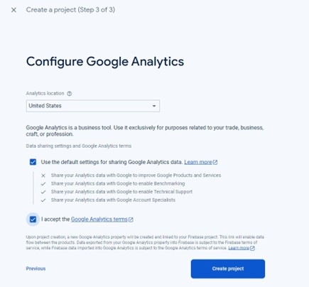

Create and Deploy a Website to Firebase
Overview
In this scenario, you are preparing for an upcoming interview with a company that uses Firebase hosting. You need to create a personal portfolio webpage on the internet that you can share with the employer. The job description states that a minimum requirement is experience with Google Firebase Hosting. The preferred candidates will have used Node.js. We will use both.
Business Requirements
-
Marketing portfolio website to obtain jobs
Project Requirements
-
Use Visual Studio Code as your text editor
-
Use an automated scalable web hosting solution
-
Use Google services if possible
-
Use Node.js to install firebase and test your code
-
The project name must include part of your first or last name
Project Overview
-
Hopefully, you already have node.js and Visual Studio Code installed on your computer. If not, ask Chatgpt how to install it.
-
Deploy a website to Firebase.
Table of Contents
- Step 1: How Do I Create a New Project in Firebase?
- Step 2: Create Necessary Files in VS Code
- Step 3: Install Google Firebase by asking ChatGPT
- Step 4: Login to Firebase with your account
- Step 5: Initialize Firebase in your project
- Step 6: Deploy your project to Firebase
- Step 7: Create a Profile webpage using AI and deploy to Firebase Hosting
- Step 8: Ask ChatGPT questions
- Troubleshooting & Common Problems
- Learning More
Instructions
Watch the video instead: Firebase Hosting Setup Video
Step 1: How Do I Create a New Project in Firebase?
- Login to Firebase using your google account or a BYU-Idaho google account if you have one (usually the email with numbers ex: lastname038@byui.edu).
-
Troubles with login - go to my.byui.edu , click on your profile image, click View Profile, scroll down to Email and use that email for the Google Firebase login instead

-
Click on Add Project.
-
Name your Project with your name and accept the terms
-
Enable Google Analytics
-
Use default settings and accept terms
 -
Wait for creation to complete


Step 2: Create Necessary Files in VS Code
-
Open Visual Studio Code (VS Code) and click File > New Window

-
Click Open Folder or on Mac Open (not open folder) to open a new folder

Click New Folder (on Mac) or right-click and choose New > Folder (on Windows) and make a new project folder called firebaseproject or a name of your choice and open it.
-
Click Yes, I trust the authors

-
In VS Code, create a new folder called public inside the project (it must be called public) by clicking on the + folder icon.

-
Type public for the new folder name

-
Click on the public folder to select it
-
Make a new file by clicking on the + file icon (make sure the public folder is still selected)

-
Make the index.html file inside the public folder (notice that it is indented a little). Make sure it is indented so that it is inside the public folder.
-
Create another new file by clicking on the + file icon.
-
Type the filename styles.css to create the styling file for your webpages. (If your CSS file is not indented under the public folder, drag it into there).

-
Make sure the styles.css and the index.html files are indented with a line like this image below so that you know it is in the public folder
-
Open the terminal in VS Code by clicking on the Terminal menu > New Terminal

In that new terminal window, run the commands given below
Install Google Firebase by asking ChatGPT
-
Sign into ChatGPT
-
Start a new chat

-
-
In the new chat prompt at the bottom, type How can I make a simple firebase webpage that uses node.js?
-
NOTE: If ChatGPT asks you to install express or admin tools, you don't need to do that. Sometimes, Try asking ChatGPT the same thing a few times. YOu will get better resutls as you analyze them.
-
-
For Windows machines: Change the execution policy
-
Search for Powershell and run it as administrator.
-
Run the following command:
Set-ExecutionPolicy RemoteSigned
-
Type A and hit enter
-
-
The prompts/commands ChatGPT provides should be run in the terminal in VS Code. For MAC Users, you may have to put sudo in front of the commands used
For example, ChatGPT should prompt you to install Firebase using npm (node package manager). (-g means to install it globally)
-
Click Copy Code from ChatGPT then paste it in the terminal in VS Code. Hit Return/Enter to run it

-
It should install a few things and it might look like this:
-
When firebase is installed, it should look something like this:

-
Step 4: Login to Firebase with your account
-
Login to firebase in your VS Code terminal with the command
firebase login
-
Type n and hit Return/Enter to not submit usage and error information

-
Login as needed and you may see this page in your terminal window
-
Login with your byui.edu email address, accept the terms and click continue
-
Allow the firebase CLI (command line interface) to access Google
-
You should see a success prompt in the browser and in the terminal


Step 5: Initialize Firebase in your project
-
Initialize the firebase project by typing in
firebase init
in the terminal in VS code
Take note of the directory it gives. When configuring multiple firebase projects, you need to be in a different directory for each.
Type y to proceed and type Return/Enter
-
Use the arrows on your keyboard to select Hosting: Configure files for Firebase hosting and (optionally) set up GitHub action deploys. Press the spacebar on your keyboard followed by Return/Enter.
-
Use the arrows on your keyboard to select Use and existing Project and press Return/Enter. This will allow us to choose a project we previously in Google Firebase

-
Pick the name of the project you made previously by using the arrow keys on your keyboard and then press Return/Enter.

-
Choose the public folder (provided by default) by pressing Return/Enter on your keyboard.

-
Do not configure it as a single-page app by typing n and press Return/Enter
-
We won't set it up with GitHub for automatic builds and deploys, so type n and press Return/Enter.

-
We want to overwrite the index.html file. Type y then press Return/Enter.

Step 6: Deploy your project to Firebase
-
Type
firebase deploy
in the terminal. This will deploy your code to a website URL that you can share with others (You must run this each time you modify your code to push the changes to the cloud). -
Copy the Hosting URL and paste it in a new tab in your browser
-
The URL should be something like https://yourproject.web.app and will look something like this:

Step 7: Create a Profile webpage using AI and deploy to Firebase Hosting
-
In VS Code, double-click the index.html file we created in the public folder and delete all of the code. You can also press (CMD/CTRL + A to select all and then Delete/Backspace).
-
Ask ChatGPT the following
Please give me code for my index.html file and a styles.css file that would be a nice portfolio page and link them
-
Click Copy Code for the index.html file and paste it into that file in VS Code
-
Them, paste the HTML code from ChatGPT into the file, or click Edit > Paste from the menu, or press CMD/CTRL + V
-
Save the file with File > Save from the menu or press CMD/CTRL + V.
-
This HTML code is to provide the text and structure for the webpage.
-
-
Now do the same thing with the CSS code provided by ChatGPT. If you don't have CSS code, ask ChatGPT for it.
-
In VS Code, delete all the content from the styles.css file and paste in the provided code.
-
Save the file.
-
The WDD 130 Course teaches more about HTML and CSS
-
-
Run
firebase deploy
again in the terminal to push your changes to Firebase -
Refresh the URL in your browser by clicking the refresh button while holding shift on your keyboard. This will refresh the cache of the page.
Step 8: Ask ChatGPT questions
-
Ask chatGPT about any concepts that you don't understand or you are unsure of
-
Ex. What is Node.js?
-
Ex. What is the purpose of Node.js within a web application?
-
Ex. What is hosting?
-
Ex. Can you make a website without hosting?
-
Troubleshooting & Common Problems
Permission Errors or firebase installation not working
-
(Mac/Apple) You may need to run the sudo command in front of the firebase installation commands and/or other commands in the terminal
-
(Windows) You may need to run the terminal commands in a terminal window or in powershell.
-
(Windows) When you search for command prompt click on the run as administrator option.
If firebase doesn't deploy
-
Rerun
firebase init
and make sure you choose the correct options from Step 5
Error: No firebase projects associated with this account
-
Are you logged into firebase with the same credentials and email?
-
Re-run
firebase init
-
Select Don't set up a default project
-
Pick the same options of yes
-
-
Run
firebase use (projectid)
(Replace with your projectid)
The website doesn’t load the styles, but only the words appear
-
Make sure the styles.css file is in the public folder and that it is linked in the index.html file
-
Make sure the styles.css file is linked in the index.html file with the correct path
-
Make sure the styles.css file is saved
Node is not able to run
-
Create a package.json file and paste the following into it:
{ "dependencies": { "express": "^4.18.2", "firebase": "^10.7.2", "firebase-admin": "^12.0.0" } }
Cannot get Firebase to finish setting up and installing
-
You may need to create the firebase.json file and paste the following into it.
{ "hosting": { "public": "public", "ignore": [ "firebase.json", "**/.*", "**/node_modules/**" ], "rewrites": [ { "source": "**", "destination": "/index.html" } ] }, "firestore": { "rules": "firestore.rules", "indexes": "firestore.indexes.json" } }
Learning More
Classes to take
-
Want to learn more about websites? Take WDD130 or WDD331R
-
Want to learn more about the Cloud? Take ITM300 or ITM310
Build Your Resume
-
Deployed a Javascript website to Firebase Hosting
-
(Future Project): Create a react website implementing tailwind CSS and deploy it to Firebase Hosting
Improve Your Site
-
Modify the website to look better with HTML or CSS
-
Deploy React website instead
-
Implement Tailwind or Bootstrap
Adding SCSS (WDD331R teaches SCSS and preprocessors)
-
Install node-sass that will convert your .scss file to a .css file. You still need to make sure your index.html file is linked to the .css file that is generated from the .scss file.
-
Run this in the terminal
npm install node-sass
-
-
Add this to your package.json file (create this file if needed - outside the public folder)
"scripts": { "build": "node-sass public/styles.scss public/styles.css" } -
In the terminal run
npm run build
-
Ideally, you put the styles.css file inside a folder titled css and you would put the styles.css file outside of the public folder (modify the script above)
-
Add a server.js file to run with node
const express = require('express'); const app = express(); // Serve static files from the 'public' directory app.use(express.static('public')); // Define routes or any other server-side logic here if needed const PORT = process.env.PORT || 3000; app.listen(PORT, () => { console.log(`Server is running on http://localhost:${PORT}`); }); -
Require express and node-sass as dependencies and create start, build, and deploy, options for node. This code would be in your package.json file:
{ "dependencies": { "express": "^4.18.2", "node-sass": "^9.0.0" }, "scripts": { "start": "node public/server.js", "build": "node-sass public/styles.scss public/styles.css", "deploy": "firebase deploy" } }